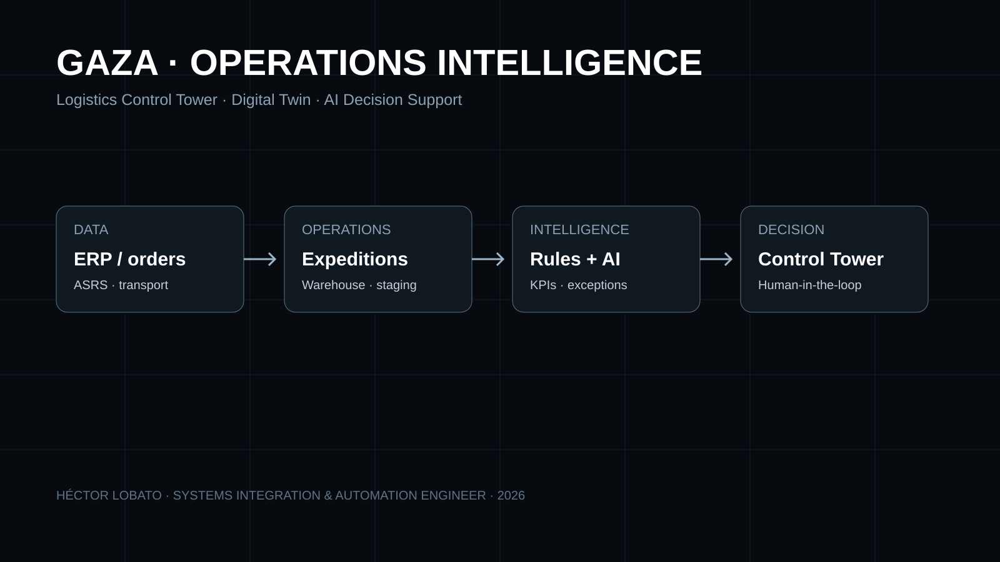
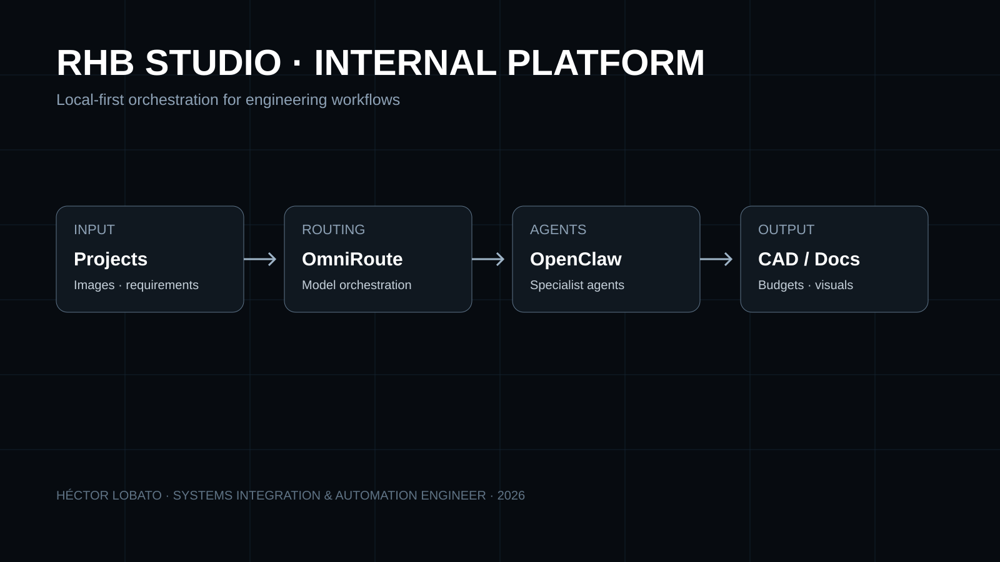

Obra, montaje y commissioning
Levantamiento, coordinación, cableado, integración, pruebas, diagnóstico, entrega y documentación de incidencias.
Ingeniería entre el espacio físico, los sistemas de control y el software.
La especialidad no es una única tecnología. Es entender las interfaces entre disciplinas, convertir restricciones en arquitectura y llevar esa arquitectura hasta una entrega operable y documentada.
Levantamiento, coordinación, cableado, integración, pruebas, diagnóstico, entrega y documentación de incidencias.
KNX, DALI, DSP, matrices, redes, PoE, integración de interfaces y diseño orientado a mantenibilidad.
AutoCAD, definición técnica, presupuestos, proveedores, QA, control de cambios y documentación de proyecto.
Python, APIs, Git/GitHub, web, GIS, agentes IA y flujos para convertir información de proyecto en sistemas utilizables.
Las competencias se agrupan por función del sistema. El objetivo no es acumular herramientas, sino saber dónde encaja cada una, qué depende de qué y cómo se valida.
KNX · ETS6 · DALI · Gira · Crestron · escenas · estados · interoperabilidad
Diseño / programación / commissioningDSP · matrices · amplificación · zonas · routing · limitación · Dante concepts
Signal flow / tuning / diagnosticsTCP/IP · VLAN · UniFi · VPN · PoE · cableado estructurado · segmentación
Availability / observability / troubleshootingAutoCAD · BOM · budgeting · proveedores · documentación · QA · change control
From survey to handoverPython · JavaScript · APIs · Git/GitHub · agentes · automatización · GIS · visualización
Tools / workflows / assistantsTroubleshooting · incident handling · support · process improvement · documentation
Operate / explain / improve
Arquitectura, sonido profesional, iluminación cálida y control tratados como un único sistema espacial.
El caso combina integración AV, KNX/DALI, custom fabrication y commissioning con una narrativa visual que pasa del edificio construido al exploded view, la lógica de planos, la cabina DJ, la iluminación 2300 K, la programación y la arquitectura de integración.

Un demostrador de producto para convertir expediciones, almacén, flota, GIS y entorno en un plano operativo común.
El proyecto trabaja la arquitectura funcional, UX operativa y modelo de información. La demo pública separa explícitamente datos públicos, reconstrucciones inferidas y simulación; no se presenta como una instalación validada en planta.

Una plataforma interna para coordinar proyectos, CAD, fabricación, documentación y agentes IA.
El objetivo es convertir el ciclo técnico completo en un sistema trazable: solicitud, levantamiento, CAD, diseño, BOM, presupuesto, aprobación, fabricación, montaje, QA y entrega. El runtime completo es local; la web pública es un showcase.
La parte digital se presenta mediante arquitectura, contratos, código, QA y demos navegables. Se distingue lo público de lo local, lo ejecutado de lo conceptual y los datos reales de los simulados.
JavaScript, Python, HTML/CSS, APIs, JSON contracts, Three.js, GIS y servicios Node para construir superficies técnicas y gateways read-only.
OmniRoute, OpenClaw, agentes especializados, skills vendorizadas, routing por disciplina, aprobación humana y separación explícita entre runtime local y showcase público.
Branches, pull requests, GitHub Actions, QA visual/funcional en Chromium, contratos de estado, artefactos de evidencia y promoción a main sólo después de checks verdes.
Diseño IT/OT read-only, credenciales fuera del navegador, observabilidad, provenance PUBLIC / INFERRED / SIMULATED, control de cambios y lógica degradable cuando una fuente externa falla.
Superficie navegable que conecta operaciones, Plant 3D, GIS, Territory, clima y sistemas con procedencia visible.
ARCHITECTURE / INTEGRATIONGateway, discovery de interfaces, contratos canónicos, límites OT y estrategia de integración read-only.
LOCAL-FIRST / AGENTSArquitectura de proyectos, routing de modelos, OpenClaw, OmniRoute, NEXO, CAD y outputs técnicos.
VERSION CONTROL / QACódigo, skills, workflows, documentación, tests y evolución trazable del portfolio y los demostradores.
Un proyecto técnico cambia de forma durante su vida. Mantener continuidad entre fases evita que el diseño, la obra, la programación y la entrega se conviertan en mundos separados.
Necesidades, estado actual, riesgos, restricciones y evidencias.
Interfaces, protocolos, topología, capacidad y decisiones.
Programación, routing, montaje, coordinación y control.
Pruebas, ajuste, diagnóstico, aceptación y correcciones.
Documentación, soporte, observabilidad y mejora continua.
Los proyectos secundarios conservan su página fuente. Cuando faltan fotografías, alcance final o permisos, el dossier no inventa material para rellenar huecos.
Integración de sistemas y documentación de proyecto. Caso preparado para incorporar concept boards, sistemas, ejecución y material real validado.
Entertainment / systems · documentation recoveryDirección técnica e integración de sistemas. La estructura pública mantiene el alcance prudente mientras se recupera el archivo original.
Confidential / high-end residentialProyecto confidencial con identidad del cliente omitida y documentación pública limitada a material no sensible.
Creative / AI studioDirección creativa, identidad, sistemas de presentación y experimentación con herramientas generativas dentro de una dirección controlada.
Formación y certificaciones ya publicadas en el portfolio. El dossier no añade credenciales no contrastadas.
Disponible para puestos técnicos, integración de sistemas, automatización, ingeniería de proyectos, operaciones técnicas y trabajo donde hardware, software y personas tengan que funcionar como un único sistema.